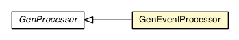

com.gwtplatform.dispatch.annotation.processor
Class GenEventProcessor

java.lang.Object
 javax.annotation.processing.AbstractProcessor
com.gwtplatform.dispatch.annotation.processor.GenProcessor
com.gwtplatform.dispatch.annotation.processor.GenEventProcessor
javax.annotation.processing.AbstractProcessor
com.gwtplatform.dispatch.annotation.processor.GenProcessor
com.gwtplatform.dispatch.annotation.processor.GenEventProcessor
- All Implemented Interfaces:
- Processor
@SupportedSourceVersion(value=RELEASE_6)
@SupportedAnnotationTypes(value="com.gwtplatform.dispatch.annotation.GenEvent")
public class GenEventProcessor
- extends GenProcessor
Processes GenEvent annotations.
GenEventProcessor should only ever be called by tool infrastructure.
See Processor for more details.
- Author:
- Brendan Doherty, Florian Sauter, Stephen Haberman (concept)
| Methods inherited from class java.lang.Object |
clone, equals, finalize, getClass, hashCode, notify, notifyAll, toString, wait, wait, wait |
GenEventProcessor
public GenEventProcessor()
process
public void process(Element eventElement)
- Description copied from class:
GenProcessor
- Override this function to receive elements which you've declared in
supported annotations.
- Specified by:
process in class GenProcessor
- Parameters:
eventElement - the annotated element.
generateAssociatedTypeMethod
protected void generateAssociatedTypeMethod(GenerationHelper writer,
String eventSimpleName)
generateDispatchMethod
protected void generateDispatchMethod(GenerationHelper writer,
String eventSimpleName)
generateHasHandlerInterface
protected void generateHasHandlerInterface(GenerationHelper writer,
String eventSimpleName)
generateHandlerInterface
protected void generateHandlerInterface(GenerationHelper writer,
String eventSimpleName)
generateFireInstanceStaticMethod
protected void generateFireInstanceStaticMethod(GenerationHelper writer,
String simpleClassName)
generateFireFieldsStaticMethod
protected void generateFireFieldsStaticMethod(GenerationHelper writer,
Collection<VariableElement> requiredFields,
String simpleClassName)
generateFireSelfMethod
protected void generateFireSelfMethod(GenerationHelper writer)
generateStaticTypeField
protected void generateStaticTypeField(GenerationHelper out,
String eventSimpleName)
generateTypeAccessorMethod
protected void generateTypeAccessorMethod(GenerationHelper out,
String eventSimpleName)
Copyright © 2010-2013 ArcBees. All Rights Reserved.